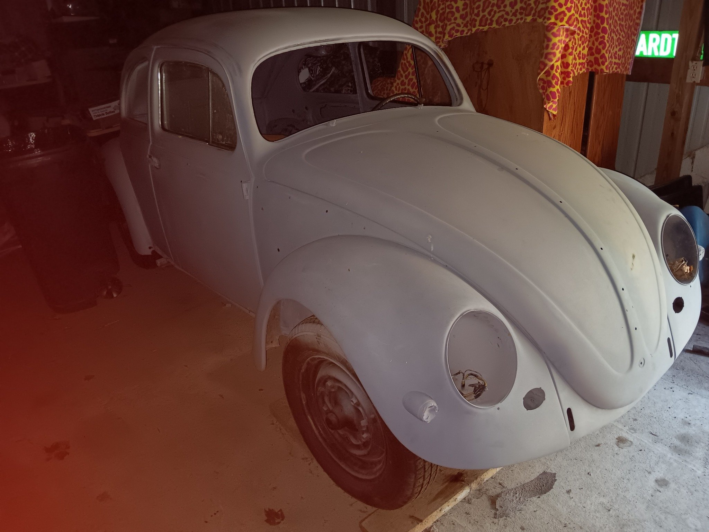

1958 Volkswagen Beetle
California Car • Estate Vehicle • Restoration Project

AVAILABLE AS IS — FAIR OFFERS CONSIDERED
What We Know
This 1958 Volkswagen Beetle is part of an estate and has been stored in a barn. It is an unfinished restoration project.
Additional parts are reportedly stored in the barn, but their completeness and condition have not been verified. Some door panels have been located.
The car reportedly ran when placed in storage. That report has not been independently verified. The vehicle has not yet undergone a mechanical or condition inspection. No representation is made that it currently runs or is roadworthy.
Offered in its present condition, AS IS, for a fair offer. A firm asking price may be established after further inspection and an inventory of available parts.